几何画板基础入门教程
作者：TeliuTe 来源：基础教程网
五、显示和隐藏 返回目录 下一课利用判定定理，我们可以做出所需要的图形，然后将辅助部分隐藏即可；
1、等腰三角形
1）等腰三角形两腰相等，线段垂直平分线上的点，到两个端点的距离相等；
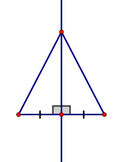
2）我们来作出上面的等腰三角形，选择线段工具，按住Shift键，在工作区里画一条线段；
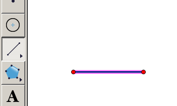
3）点菜单“构造 - 中点”，在线段中间作出中点来；
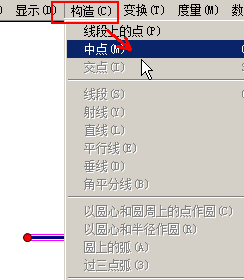
4）再用选择工具，选择线段，保持中点和线段都是选中状态；
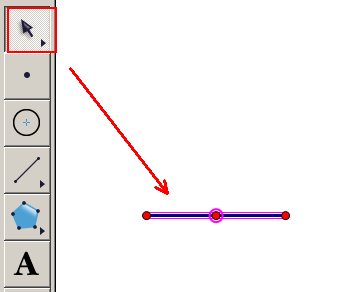
5）点菜单“构造 - 垂线”，这样就会在中点位置作出一条垂线，也就是垂直平分线；
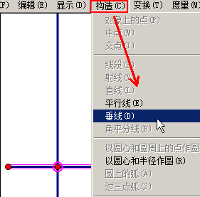
6）点菜单“构造 - 垂线上的点”，在垂线上作出任意一个点，调整好位置；
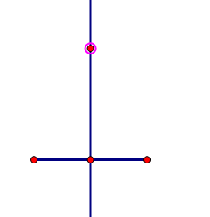
7）选中三个点，点菜单“构造 - 线段”，连成一个三角形；
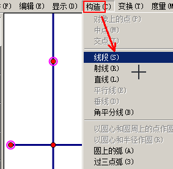
8）因为中间的线是垂直平分线，所以到线段两个顶点的距离相等，也就是三角形的两腰相等；
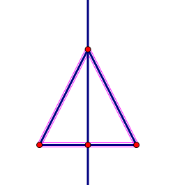
9）中间的垂直平分线不需要了，可以隐藏起来，选中直线，点菜单“显示 - 隐藏垂线”；
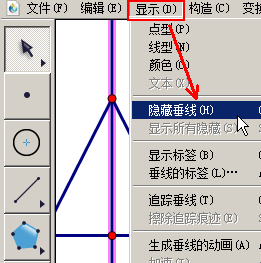
10）同样选中中点，再点菜单“显示 - 隐藏中点”，只留下一个等腰三角形，保存一下文件；
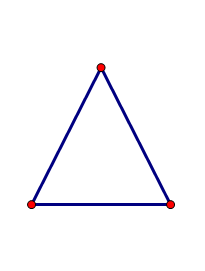
11）需要显示隐藏的对象时，点菜单“显示 - 显示所有隐藏”，就可以全部显示出来；
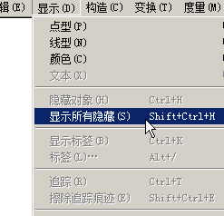
本节学习了显示和隐藏对象的基础知识，如果你成功地完成了练习，请继续学习下一课内容；
本教程由TeliuTe制作|著作权所有
基础教程网：http://teliute.org/
美丽的校园……
转载和引用本站内容，请保留作者和本站链接。